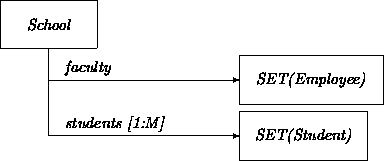
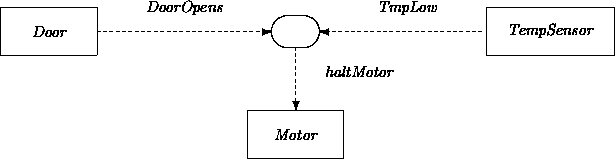
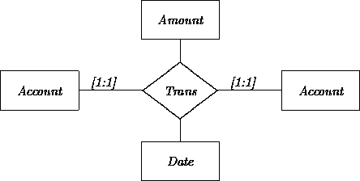

|
Chapter 18: Relationships in Design |
In this chapter, we describe objects that track, collect, and maintain other objects. In previous chapters of Part II, we normally assumed that we were dealing with OOA models that mentioned only the abstract attributes and associated properties of particular classes, operations, or sets of classes. The design methods focused on the transformation of this information into composite and concrete class definitions meeting these properties. Another view focuses on their relations to other objects. Relations describe objects solely in terms of ``who they know''.
In many ways, relational information forms the complement of property-based abstract class information. Pure abstract classes list only fns and ops without necessarily revealing anything about internal connections. Pure relationships list only links, without necessarily revealing anything about properties and behaviors of the groups of objects when considered as a whole. In relational design, we often add properties and behaviors to the interfaces of classes holding known links, rather than finding component objects that help satisfy a known interface.
OOA models may describe relationships in either of two ways. Relational models discussed in Chapter 4 explicitly specify relations such as SisterOf, WorksFor, UsedBy, and so on, connecting particular objects. Also, OOA class descriptions may describe links to objects as intrinsic attributes. For example, a Face class may list attribute nose:Nose. This represents a connection to a Nose object that is constrained to play a certain role in its Face.
All relationships (as well as composite objects) are described in ODL using the same basic link constructs. Declaring that some class X has a y:Y attribute or link means only that each X object ``knows about'' or ``may directly communicate with'' an object of class Y. This cannot capture the different senses in which different objects may be connected. Semantically meaningful relations such as SisterOf can only be established by convention, by naming strategies, by qualifiers and annotations, and, mostly, by usage.
There are many ways to capture static relationship information, depending on how it is structured and used. In fact, there are at least as many strategies as there are ``linked data structures'' and associated techniques, as extended by subclassing and other OO constructs. We will describe only a few of the most common and useful points on the design space resulting from considerations including:
A good starting point is to declare each element of a relationship as an instance of a class with fixed object link attributes. For example, the ownership relation between clients and accounts is:
class ClientAccountTuple % or `class Own' local cl: fixed Client; local acct: fixed Account; end
The entire aggregate relationship itself could then be defined as a SET of such tuples.
However, this is by itself a pretty useless design. The class has no external interface at all. No other object may communicate with members of ClientAccountTuple. Such classes are ``abstract'' in a very different sense than the abstract classes we have previously encountered. They represent abstract linkages, relationships, and/or interaction potentials between objects. We will sometimes use the phrase ``pure relational'' to denote this kind of class.
If a relational class exists in order to help other objects keep track of relationships, it may contain an interface that ``gives away'' the identities of participants. It may also contain any other properties and constraints of interest. A variant of the original may be defined as a subclass:
class ClientAccount client: Client; account: Account; inv account.ownerID = client.clientID lastAccess: Date; op markAccess(d: Date) ==> sameDate(lastAccess', d) end end
class ClientAccountV1 is ClientAccount
client: Client <>
account: Account <>
own lastAccessDate: Date <>
op markAccess(d: Date) { lastAccessDate.set(d) }
end
Classes such as ClientAccount expand on a simple relationship to localize attributes and operations, and to isolate and manage object interaction. For example, the difference between abstract and concrete versions may be exploited when hiding database retrieves behind the veneer of an interoperable relational class.
While simplest and nicest, these relational class declarations do not make allowances for objects to directly ``know'' what relations they are in (i.e., here, for clients to know their accounts). If this is necessary, we might additionally declare that such relational objects serve as conditionally bound link attributes of their participants. We may also add predicates that allow one member to report whether it is related to another:
class Client_1 r: opt ClientAccount; fn owns(a: Account): bool = (~null(r) /\ r.account = a); end
(and/or similarly for Account). This is one translation of:
The previous strategy only works for [0:1] and [1:1] relationships. If each Client may own an unbounded number of accounts, then the links and back-links must be defined as collections, for example:
class Client_2 r: fixed SET[ClientAccount]; accts: fixed SET[Account]; end
If a relationship is accessible only via its participants, if it possesses no other attributes, if there is no other reason to track it externally, and if the relationship is [1:1] or [0:1] for each participant, then there is no need to declare a relational class at all. Instead, each participant may declare a conditionally bound link attribute to the others, perhaps along with state attributes that keep track of whether the relation is in effect:
class Client_3 ... isOwner: bool; acct: opt Account; inv isOwner => ~null(acct) end
If objects of one class are uniformly and necessarily related to those of another and there is no other need to keep track of the relation separately, the relation may be declared using regular link attributes. For example, say that accounts are intrinsically required to be owned by particular clients, so that it is impossible to have an account without an owner. This implies that Account_2 is itself a sort of relational class in addition to its other properties:
class Account_2 ... owner: fixed Client; end
If only special kinds of objects are related to others, they may be split away and described as subclasses. For example, if only some kinds of accounts have owners, we could make OwnedAccount a subclass of (ownerless) class Account.
If the form of the relation must always hold, but one of the participants may vary, then the link need not be declared as fixed. For example, declaring just owner:Client means that an account always has an owner, but that it might be owned by different clients during its lifetime.
Specific relational classes may be subsumed under generic classes. For example, at an extreme, any relationship linking any two objects of the same class could be described parametrically via:
class PAIR[T] first: T; second: T; end class ParentChild is PAIR[Person] ... end
This level of abstraction can impair understandability. Here, for example, we would probably like to label the two participants as parent:Person and child:Person rather than just first and second. Luckily, both effects may be had at once through views:
Relational designs focus on relations among objects. Inheritance is a relation among classes. The two concepts should not be confused. Relational classes may look superficially similar to multiply inherited classes. However, relational classes describe internal connections, without a commitment to visible properties, while (abstract) multiple inheritance describes properties, without a commitment to composition. Sometimes these may be mixed and matched, but it is worth getting the options straight. For example, it might be tempting to express the ownership relation as:
class CA is Client, Account end
This declaration says that all objects of class CA have all the characteristics of accounts as well as all those of clients. Thus, CA objects have interestRate properties, can perform deposit operations, but also have lastNames, clientIDs, and so on. This is surely not what is intended. It is never a good idea to express such relationships as multiply inherited classes unless by rare chance all properties and operations defined on all of the component classes may be inherited meaningfully.
Relation specifications may include inv constraints representing contracts [2] between their members. For example, a relationship may include the constraint that the client ID number of a person's checking and savings accounts must be the same. Or a user interface specification may say the open/closed status of a cash dispenser door matches that of a displayed door-icon. These might be specified at the OOA level explicitly via constraints, or implicitly via parametric relations (Chapter 4).
Note that parametric (generic) relational classes are not the same as OOA-level parametric relation instances. The latter are typically used to indicate constraints on elements of other classes. For example, the Family class in Chapter 4 might look like:
class Family ... parent: Person; child: Person; inv parent.isCustodianOf(child) end
Simple static measures occasionally suffice to maintain invariants. Some relational constraints and dependencies may be satisfied by designing classes that share links to the same source object. For example, a good way to ensure that all accounts held by a person report the same client number is to have them all share links to the same client object, and delegate requests to get the client ID through the sole object whose job is to maintain it. As long as the constructors and participants ensure that the links are properly shared, all is well. This technique is just the time-honored practice of reducing a value equality constraint to a link equality constraint. Assuming fixed links and/or other precautions, this need be established only once:
class AccountPair ...
savings: fixed SavingsAccount <>
checking: fixed CheckingAccount <>
inv savings.owner = checking.owner % rely on constructor to establish
inv savings.clientID = checking.clientID % implied by owner equality
end
op mkAccountPair(c: Client): AccountPair {
reply new AccountPair(
savings := new SavingsAccount(... owner := c ...),
checking := new CheckingAccount(... owner := c ...)) }
Such strategies fail when the constraints carry dynamic consequences (i.e., lead to transitions in any of the participants). For example, if there were some action that each account needed to perform if the client ID changed, this must be actively coordinated using the methods described later in this chapter and in Chapter 22.
SETs and related classes are often used to represent collections of objects all of which satisfy some property or relation. Many different collection classes may be defined, each differing in interface and policies for keeping track of objects. These serve both as tools for expressing multiplicity features described in analysis models, and also as bases for many manager classes.
The general forms of these classes are not unique to object-oriented design. They are similar to constructs used to describe and specify groupings within other design approaches (see, e.g., [4]). As usual, there is nothing very special about the precise definitions of the classes we list here. They are ones that are most commonly found to be useful. We do not make much of a commitment about the exact form of these classes or of their inheritance relations in following discussions, but we need them to exemplify designs using collections.
Sets are usually the best way to translate [0:N] attributes described in OOA models, as well as collections of relational tuples and other groupings. As discussed in Chapter 4, analysts might use set notation for such purposes, in which case essentially no transformation is necessary. A generic class SET supports properties size and membership predicate has, as well as operations to add, remove, and perform operations on elements:
class SET[T] size: int; % number of elements empty: bool = size = 0; fn has(item: Any): bool; % true if item is in set op put(item: T): () ==> has(item)' end op remove(item: T): () ==> ~has(item)' end op applyC(p: WRAPPER1[T]); % call p on all elements op applyS(p: WRAPPER1[T]); % send p to all elements end
New forms of wrappers are referenced in applyC and applyS. These invoke (either in call or send mode) the same operation for each element of a set. The associated wrappers take an argument, thus allowing the passing of arguments through to the inner operations:
class WRAPPER1[T] op call(t: T): (); op send(t: T); end
We assume a WRAP1 macro that creates the right kind of wrapper and instantiates it. This then allows:
op print(s: SET[MailingLabel]): () { s.applyC(WRAP1(print(#1))) }
[We use `` # n'' as a placeholder for macro argument number n.]
A WRAPPER2 may be defined similarly for two-argument operations, and so on. Special versions may also be defined to wrap procedures and functions classified on result type in addition to argument type. We will sometimes do this. For example, a PREDWRAPPER1 is a WRAPPER1-like class that wraps its actions within fn pred: bool, so it can transmit a boolean result back to its sender. Such basic macros cover the most common need for holding operations as objects. But there are as many kinds of wrappers as there are relational classes and operations. They cannot all be generated mechanically.
Any number of auxiliary operations may be defined on top of set classes. For example, set union and difference might be supported in a mutable fashion:
op putAll[T](dest: SET[T], other: SET[T]): (); % add all elements of other into dest % i.e., set dest to (dest U other) op removeAll[T](dest: SET[T], other: SET[T]): (); % remove all elements of other from dest % i.e., set dest to (dest \ other)
Refinements of set classes may be defined through subclassing. For example, special versions of sets might guarantee that applyC traverses elements in an order based on some kind of key values. It is also convenient to define less powerful superclasses. In particular, defining PUT_ONLY_SET that supports only has and put is a useful way of to ensure that items are never removed or otherwise touched.
Associated concrete classes may be based on hash tables, linked lists, balanced trees, and so on. It is often useful and convenient to implement the applyS and applyC operations as multicasts (see Chapter 22).
A SET may be used in translating the Hand class described in Chapter 3:
class Hand ... thumb: Finger; fingers: SET[Finger]; inv fingers.size <= 6, fingers.has(thumb) end
The SET[SET[Student]] in the following version of the School class results from the mixture of [1:M] and explicit set constructs:

class School ... faculty: SET[Employee]; students: SET[SET[Student]]; end
The simplest relation-holder is just a set whose elements are relational objects. Other status operations may then be added. For example:
class ParentChildSet is SET[ParentChild] ... op put(pc: ParentChild); fn hasParent(p: Any): bool; fn hasChild(c: Any): bool; end
class BUFFER[T] empty: bool; % false if can take full: bool; % false if can put op put(item: T): (); % insert an item op take item: T; % take any item end
Unbounded versions may be defined as subclasses for which full is constantly false. (The same technique may be used to create possibly bounded SETs and BAGs.) Subclasses of BUFFER may strengthen the guarantees of take. In particular, a QUEUE promises that take returns the least recently inserted item (i.e., maintains FIFO policies).
class Employees boss: Employee; ssns: MAP[Name, SSN]; inv ssns.at(boss.name) = boss.ssn end
A useful variant is an EQUIV_MAP, which guarantees that keys and contents have a one-to-one relation, and supports an unmap(cont) to return the first element, given the second.
class TABLE[T] size: int; % number of elements empty: bool; % true if size = 0 has(index: int): bool; % true if item with index is in table op put(item: T): int; % put item anywhere, return its index op remove(index: int); % unbind item at index op at(index: int): opt T; % return item at index op atput(index: int, item: T):(); % rebind item at index end
class TRAVERSABLE_TABLE[T] is TABLE[T] lowest: int; % minimum bound index highest: int; % maximum bound index op next(index: int): int; % next bound index end
These may be used, for example, in:
class Entries
v: TABLE[Account];
fn accountExists(acctNum: int): bool { ~null(v.at(acctNum)) }
end
op printAll(t: TRAVERSABLE_TABLE[Employee]) {
local i:int := t.lowest;
while i <= t.highest do print(t.at(i)); i := t.next(i) end }
There are several other idioms for arranging traversal. An alternative strategy illustrated later is to define iterator objects with operations that reveal the ``current'' element of a particular collection object, as well as those that step to the next (or previous or whatever) element on request.
class Balances
v: ARRAY[Balance];
op printAll { local i: int := 0;
while i < v.size do print(v.at(i)); i := i + 1 end }
end
Multidimensional arrays may be declared as ARRAY[ARRAY[T]]. Alternatively, special cases (e.g., MATRIX) may be defined directly. ARRAYs may also be used to translate bounded OOA multiplicities. For example, the Hand example might be recast as:
class Hand ... fingers: ARRAY[Finger]; inv fingers.size = 6 end
class Book ... ch: SEQ[Chapter]; inv ch.hd.number = 1 end
A mutable string class may be defined as:
class String is SEQ[Char] ... op toUpperCase; % transform all chars to upper case end
An immutable version may be defined as:
class CharVal val: fixed Char; end class StringVal is IMMUTABLE_SEQ[CharVal] ... end
where IMMUTABLE_SEQ is a superclass defining only fns, not mutating operations.
Rather than treating the elements as parts of a structured collection, sequential ordering may be represented as a relationship between individual objects. For example, if each Chapter object intrinsically bears an is-followed-by relation with another, this could be expressed through:
class Chapter ... next: opt Chapter; end class Book ... firstChapter: Chapter; end
This may be refined a bit by segregating those objects that are followed by others versus the (only) one that is not:
class Chapter_2 ... end class FinalChapter is Chapter_2 ... end class LinkedChapter is Chapter_2 local next: Chapter; end
However, this does not apply if any given object may need to change its status from linked to unlinked or vice versa (e.g., if a new final chapter is added, making the old one nonfinal). Alternatively, the links may be wrapped ``around'' the objects rather than ``within'' them:
class Chapter_3 ... end class ChapterLink local ch: Chapter_3; local next: opt ChapterLink; end
This is a common strategy for designing the internal structure of concrete SEQ, SET, etc., classes. Note that this loses subclassing. For example, if Chapter objects have title attributes, then so do LinkedChapters. But for ChapterLink objects, the Chapter is treated as an internal component. The attributes are not automatically propagated (although this could be done manually via forwarding).
Elements of a sequence or other collection may include protocols for collaborating on various tasks. For example, suppose we would like to be able to send a printBook message to any Chapter object in a book, and still have the book printed in chapter order:
class Chapter_4 ...
locals prev: opt Chapter_4; next: opt Chapter_4; end
op printBook {
if ~null(prev) then prev.printBook else self.printAndPropagate end }
op printAndPropagate {
Printer$print(self); if ~null(next) then next.printAndPropagate end }
end
In this case, there may be no need to create a Book class representing all members of the relation. This is only attractive when group (relation) membership need not be otherwise managed or tracked.
There are as many such designs as there are operations on data structures. This example is an ``active doubly linked list''. Similar configurations and algorithms may be based on trees, hypercubes, and other graph structures (see, e.g., [3]).
Repositories (or ``containers'') are collections that take an active role in protecting and maintaining their elements. These structures provide footholds for establishing storage, persistence, and database management. From an analysis perspective, repositories are collections that are also ensembles. They are also crosses between collections and generators. Like collections, they keep track of all members in some structured fashion. Like generators, they include operations that cause new objects to be constructed. A repository class may be defined to maintain all objects of interest in a particular class or set of classes, as well as associated constructors and other bookkeeping functions. For example:
class ActiveAccounts
accts: SET[Account];
syslog: TransactionLog;
acctErrorHandler: AccountErrorHandler;
...
op mkAccount(initBalance: real...) a: unique Account {
a := ...; accts.put(a); }
op deactivate(a: Account): () { accts.remove(a) }
op overdrawnAccounts(s: SET[Account]); % place all overdrawn accts into s
end
Classes such as ActiveAccounts have all the makings of database services that maintain, report on, and serve as the primary interface for collections of objects. For example, we could extend this to include the general purpose:
op select(s: SET[Account], pred: AcctPredicate);
% add all accts obeying predicate into s
Many object-oriented databases use constructs of this general form [1]. They differ across dimensions such as whether managers are designed to keep track of all versus some elements of one concrete class, one abstract class, one hierarchy, and so on. They also differ in how they collect, traverse, and present the component objects.
Most repositories are based on SETs. In Chapter 3, we noted that classes may be viewed as descriptions of sets of objects, all sharing some of the same properties. A repository using a SET to keep track of a group of objects, all of the same concrete class, may be seen as a concrete translation (or variant, or extension) of a metaclass (see Chapter 8).
Besides tracking objects, metaclass-like repositories may be able to answer questions about their properties. For example, they might support a check to see if all contained objects possess a given attribute:
class ActiveAccounts_2 ...
attrs: fixed SET[AttributeDescriptor];
fn hasAttrib(a: AttributeDescriptor): bool { attrs.has(a) }
end
Support for such queries requires that all details of classes themselves be reified by creating classes representing the metaclass attributes described in Chapter 8. Representational forms for attribute functions, operations, messages, etc., must be devised. For example:
class AttributeDescriptor ... name: String; args: SEQ[ArgumentDescriptor]; type: ClassDescriptor; quals: SET[AttributeQualifierDescriptor]; end
Unless a target implementation language and/or support service already includes all of the background declarations for classes such as AttributeDescriptor, an entire framework of such classes and operations must be designed.
We refrain here from providing a full self-descriptive framework for ODL. Most practical system design efforts require conformance with possibly conflicting predefined features of existing tools and database facilities (see Chapter 23). For example, such a framework could serve as a basis for a query language built on top of the base system. Similarly, standardized ``interface repositories'' collecting attribute and service descriptions may be needed in support of dispatching and routing (see Chapter 21). The need to conform to existing database and/or dispatching facilities may limit options and expressiveness.
Normally, collections include attributes and operations specifically designed to reveal and track maintained objects. But this need not be so. A repository may be designed to never export the identities of elements:
class HiddenActiveAccounts ...
accts: SET[Account];
op mkAccount(initBalance: real...) { accts.put(new Account...)}
op selectivelyApply(predicate: Predicate, action: Action)
{ % do action for all accounts meeting predicate % }
end
...
accts.selectivelyApply(PREDWRAP1(#1.overdrawn), WRAP1(print(#1)));
Here, the repository only supplies methods that relay operations to internal objects selected via descriptive predicates, without ever revealing the component objects.
An alternative design is to retain a form of identity-based communication, but to manufacture pseudo-identities that are then intercepted. A repository agent may pass out arbitrary keys that uniquely identify internal objects. This results in a managed ``public'' object identity scheme overlaid on top of the ``real'' internal one. Any kind of ID format (e.g., strings) could be used, with various kinds of MAPs performing the translation. To illustrate with integer pseudo-IDs:
class KeyedActiveAccounts ...
tab: TABLE[Account];
op mkAccount(initBalance: real...): int {
reply tab.put(new Account...) }
op addToBalance(key: int, amt: Cash): () {
local a: Account := tab.at(k);
if ~null(a) then a.addToBalance(amt) end }
end
All access to the internal objects is mediated through the specially generated pseudo-IDs. The agent may then intercept, preprocess, and otherwise manage operation requests to these objects, at the expense of duplicating the entire interface of the contained objects and providing the appropriate forwarding.
Relational classes and collections are special kinds of encapsulators. They keep track of other objects and may maintain a separate, controlled interface to them. This attitude toward relational classes leads to a number of design strategies that exploit these properties.
The best examples stem from the need to convert top-level operations to other forms. We have distinguished operations that are received by particular objects versus ``top-level scripts'' that just so happen to employ these objects. For example, we could define operations for our mailing label class like this:
class MailingLabelV2 is MailingLabel ...
op setStreet(newSt: String80) { _street.set(newSt) }
op setZip(newZip: int) { _zip.set(newZip) }
op setCity(newCity: String80) { _city.set(newCity) }
end
op copyAddress(dest: MailingLabel, src: MailingLabel): () {
dest.setStreet(src.street);
dest.setCity(src.city);
dest.setZip(src.zip) }
Operations such as setStreet, setCity and setZip differ from copyAddress in that they are all received by mailing label objects, while copyAddress is an application operation that in turn invokes more primitive operations on its participants.
The use of receiverless operations turns out to be inconvenient in later design. One pragmatic reason is ``name space pollution''. When a project is constructed by multiple developers, clashes in choices of top-level operation names and the like become inevitable without further precautions. Receivers may be ``found'' by exploiting the relationship between composite classes and composite (scripted) actions. Any composite action may be recast as an argumentless operation that is owned by a class with link attributes corresponding to the associated arguments of the original version. For example, we could declare a class that directly supported the copyAddress operation:
class MailingLabelCopier
local dest: MailingLabel <>
local src: MailingLabel <>
op copyAddress: () { dest.setStreet(src.street); ... }
end
c := new MailingLabelCopier(dest := lab1, src := lab2);
c.copyAddress;
This example illustrates the fact that operation coordinators may always be built up from relational classes. Any free-standing ``scripted'' operation with one or more participants may be transformed into a coordinator class with a single argumentless action. Thus, our ``top-level'' operations might be thought of as relational class specifications of a particularly simple sort. Free-standing operations and concrete objects are two points on a continuum of conventions and usages:
There is a lot of middle ground here. Whenever there is a need to manage interaction in a way that defies implementation through a single operation, a composite, relational or collection class may be built or extended.
These classes serve as perhaps more literal translations of acquaintance relations described in Chapter 6 than other classes we have so far described. The view and wrapper classes described in Chapter 17 may also be seen as examples of this tactic. In all cases, the conceptual property that distinguishes them from ordinary composite classes is the relational nature of link information. Links inside such classes are used to track and manage participants that are not otherwise within the object's exclusive control. In other words, relational objects form layers that are not necessarily or even usually communication-closed.
Different OO languages and systems have different policies about operation receivership and coordination. While these need not directly impact design strategies, they may influence their expression. Some OO languages (e.g., CLOS ) and OO databases (e.g., Iris/ OpenODB) do not (at least normally) directly attach operations to classes at all. In such cases, there is less motivation and support for converting multiparticipant operations into classes. In fact, the reverse transformation is more appealing, and sometimes even necessary. Systems encouraging this style are usually accompanied by lack of access restrictions, enabling more centralized handling of dynamics. However, this also makes it harder to express matters of distribution. In a fully distributed system, it may be difficult or impossible to implement a centralized top-level facility for handling all otherwise receiverless messages.
At the other extreme, some OO languages require that all operations be attached to classes. This policy sometimes leads designers to attach operations to the ``wrong'' classes. For example, it is tempting to attach operations on pairs of MailingLabels to the MailingLabel class itself rather than a coordinator. However, this does not always result in the intended effect. This is the reason we attach all top-level operations to System without demanding that System be declared as a class in a conventional manner. Transformations may be applied at any time to distribute capabilities among receivers.
Variants of acquaintance relations and ``event stepping stone'' classes may be used as single-purpose event coordinators between fixed sets of objects. For example, a class may coordinate the door-sensor-motor interaction from Chapter 6:
class DSM ...
locals
door: fixed Door <>
sensor: fixed TempSensor <>
motor: fixed Motor <>
end
op doorOpens { motor.halt }
op tmpLow { motor.halt }
end
class Door ...
local dsm: DSM;
op openDoor { ...; dsm.doorOpens }
end
The DSM class serves as one translation of the oval in:

The dynamics of coordinator objects are discussed in more detail in Chapter 22.
Rather than wrapping up all participants as links, a module-like class may hold only the ``protocols'' for maintaining relations and interactions among particular kinds of objects, leaving the arguments intact. Usually, such classes support a collection of operations that all have exactly the same arguments. For example, to group sets of operations on pairs of MailingLabels:
class MailingLabelPairModule ... op copyAddress(dest: MailingLabel, src: MailingLabel); fn sameName(a: MailingLabel, b: MailingLabel): bool = (a.name = b.name); end
These classes are similar to modules in other design frameworks. They help organize and localize groups of related functionality. They also serve the same conceptual role as generators. In fact, they may be defined in an arbitrarily similar manner to generator classes. The main difference between them is that here, the objects are not only constructed, but also pushed into action. For example:
class MailingLabelPairModule ...
op copy(d: MailingLabel, s: MailingLabel) {
new MailingLabelCopier(dest := d, src := s).copyAddress }
end
This is one way to implement pure ``stateless'' service transitions (Chapter 6) in which the server creates a new object to handle each new request.
For another example, the following coordinator class may be used to translate the Transfer relation described (in Chapter 4):
class Transfer src: fixed Account; dest: fixed Account; amount: fixed Cash; date: fixed Date; op transfer; % do the transfer end

Alternatively, a transferless version of Transfer might be accepted by a module:
class TransferProtocol op transfer(t: Transfer); % do the transfer end
Such classes may be scaled up to mediate arbitrarily complex actions. For example:
class TrafficLawModule ...
op encounter(v: Vehicle, s: TrafficLight);
% if s is red, tell v to stop and tell s to turn green soon, etc.
end
Again, these mediators differ from coordinator objects in that they know only the protocols, not the participants, which are transmitted as arguments that may change from invocation to invocation. Callers must know of appropriate modules, as well as other co-participants. Alternatively, protocol mediation modules may be seen as generators of coordinator objects. Given a protocol and a set of participants, they may construct and set in motion a coordinator.
There is a continuum from the relational, collection, and coordinator classes described in this chapter to the composite classes described in Chapter 17. In pure relations, only the links and their invariant constraints matter. Providing some kind of interface and behavior for the class is sometimes almost an afterthought. But for property-driven concrete classes, the links are ``uninteresting'' and exist only in order to provide a mechanism in support of a desired interface. These represent different approaches to the same basic design activity of relating internal characteristics to outward appearances.
Even though they lie on the same continuum, the conceptual differences between OOA-level relations and composites usually have other computational consequences. The best example, which also serves as a prototypical consideration for a range of other issues, is the notion of copying instances. Consider the prospects for writing clone operations for our Client AccountV1, School, Active Accounts, or Mailing Label Copier classes.
One way to clone Client AccountV1 is through a deep copy. This copy makes in turn a clone of the client, account, last Access Date, along with any other nested components, and then makes a new Client AccountV1 object with the links bound to these objects.
This sounds wrong. Cloning makes perfect sense for underlying support components such as lastAccessDate. But the overall purpose of the ClientAccount class is to record connections between pre-existing Client and Account objects, not to make up new ones. Conceptually, such a cloned object would not be a faithful copy. It represents a different instance of the relation, between two new objects that presumably have the same states as the originals, but are not the same objects. Generating such clones nearly always leads to trouble. Any other object wanting a copy of a ClientAccountV1 probably needs it in order to communicate with the participants, not to create new ones.
A second problem is more mechanical. A ClientAccount::clone requires associated Client::clone and Account::clone operations. But suppose that Client also had a direct link to the Account. Should Client::clone make yet another copy of the Account in the process of cloning itself? And what about circular links? These issues come into play as well when attempting to create description records for relational objects.
Often, the best pragmatic solution is just not to define clone operations for relational objects if you do not have to, thus avoiding the issue entirely. Another option is to rely on shallow copies in which the old link bindings are propagated to the newly created relational objects. Shallow copying of relational objects may be used to implement a form of parallelism . Clients of each copy may pass messages through the different relation instance objects simultaneously.
Compare this to the idea of cloning Lamps, where deep copying seems most sensible. Generally, whenever you can qualify a link as own (or otherwise communication-closed) deep copying is the right approach. Other cases require consideration of situation-specific semantics. These matters reflect the same difficulties with the metaphors of PartOf and related aggregation concepts discussed from an analysis perspective in Chapter 9. They do not go away in design.
Relational and composite classes represent, track, and/or manage groups of other objects. They may take a wide range of forms, including:
Collections similarly come in many flavors, and fill many disparate needs in design. SETs are among the foremost tools in the transformation of OOA models. They are usually the right way of dealing with multiplicities and apply-to-all formulations. However, in any particular situation, other collections might better fit semantics.
The design and implementation of classes representing relations and collections rests on common linked data structures. Knuth [5], Standish [8], Sedgewick [6], and Smith [7] are good references for the underlying data structures and techniques. Many specification languages (e.g., VDM [4]) provide fuller semantics for ``standard'' collections including SETs. Special relational techniques and approaches (especially those geared toward persistent storage) may be found in the relational and OO database literature, for example, the ACM SIGMOD and IEEE Data Engineering conference proceedings.